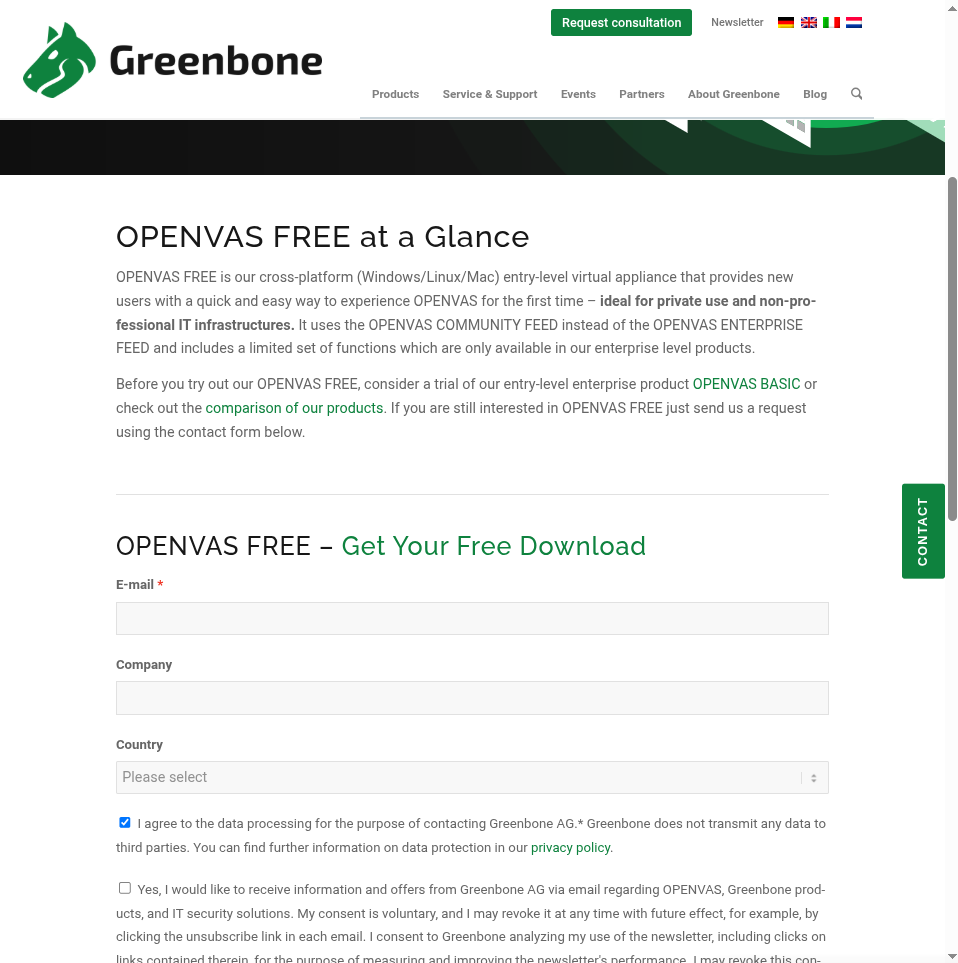
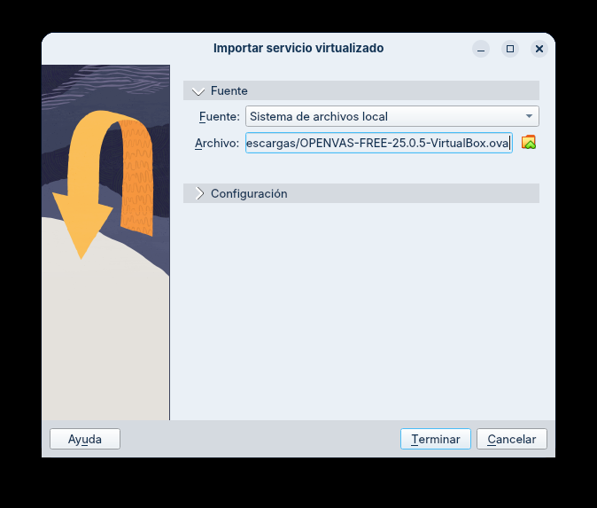
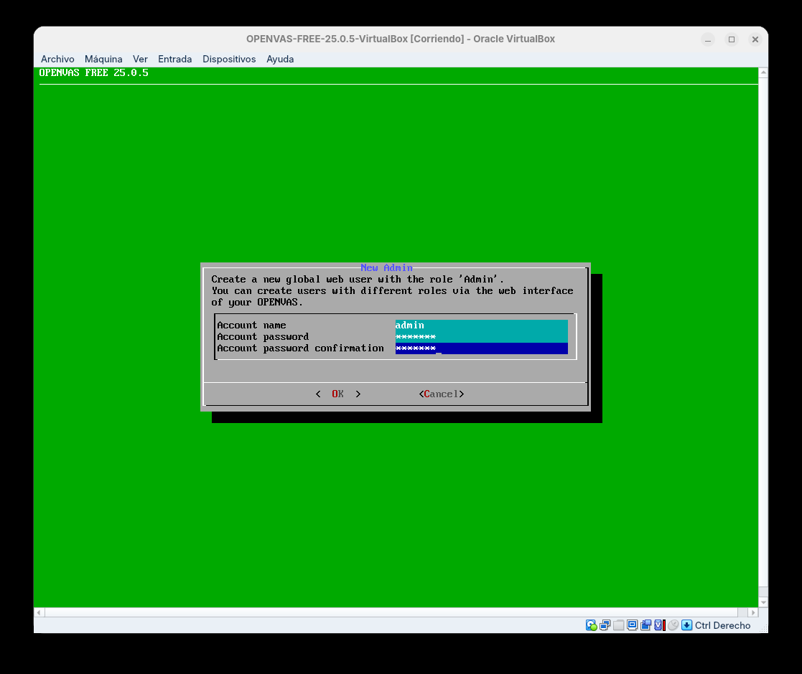
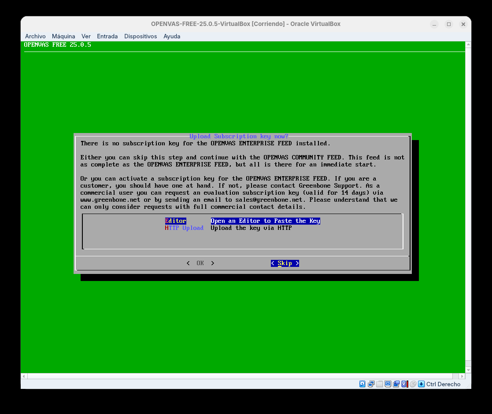
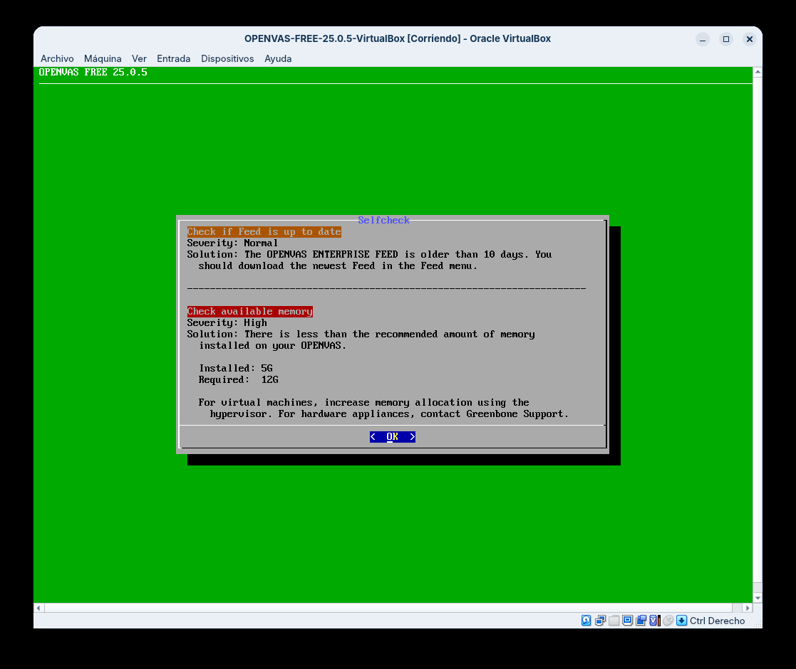
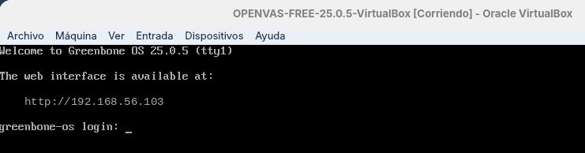
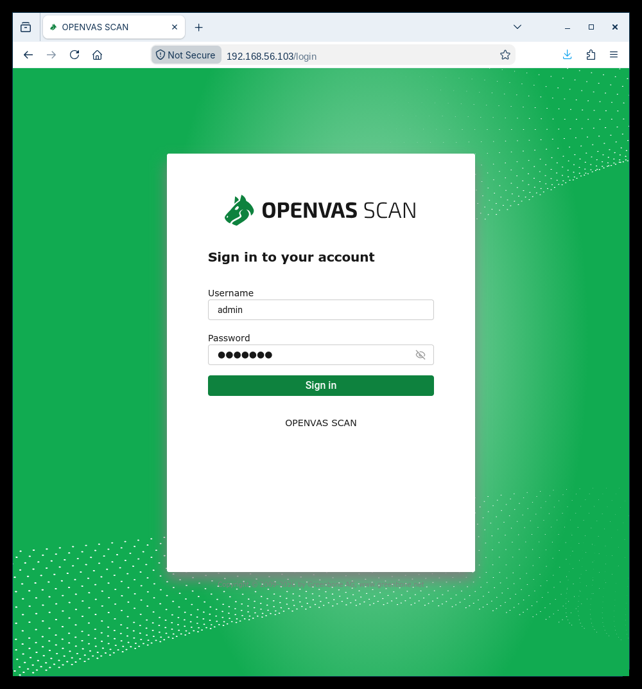
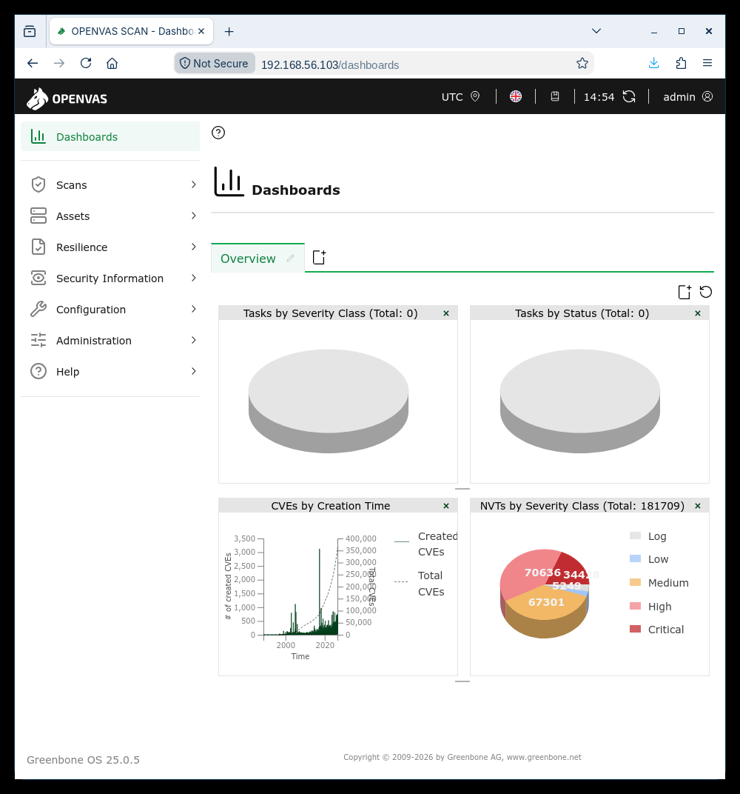

Automatización · OpenVAS / Greenbone (appliance OVA)
➡️ Práctica correspondente: Análise de vulnerabilidades con OpenVAS/Greenbone
OpenVAS / Greenbone Vulnerability Management (GVM) é un escáner de vulnerabilidades. Este documento monta o escáner a partir da appliance oficial OPENVAS FREE de Greenbone: unha máquina virtual OVA que xa trae o Greenbone OS co GVM preinstalado e configurado, de xeito que non hai que instalar nin compilar nada. Só se importa en VirtualBox, se axusta a rede e se completa un breve asistente.
A appliance queda na rede host-only 192.168.56.0/24 (IP 192.168.56.103), a mesma que Metasploitable 2 (192.168.56.30) para poder escanealo.
Oficial: greenbone.net/openvas-free · Documentación: greenbone.github.io/docs
Por que a appliance OVA e non a instalación nativa
A versión en appliance (OVA) é a vía máis rápida e reproducible para a aula: o GVM vén xa instalado, coa base de datos creada e o servizo arrancando só no boot. Evítanse os pasos longos e fráxiles dunha instalación nativa (compilación do feed, axustes de PostgreSQL, permisos, etc.). A cambio, a máquina é un sistema pechado (Greenbone OS): non tes unha shell xeral de Linux, só o menú de administración da appliance e a consola web.
Requisitos
- VirtualBox 7.0+ no host.
- Rexistro gratuíto en Greenbone para obter a ligazón de descarga da OVA (pídese un correo electrónico).
- Recursos: a appliance impórtase por defecto con 5 GB de RAM e 2 CPUs. Funciona para o laboratorio; Greenbone recomenda 12 GB para uso intensivo (o selfcheck avisará diso, pero non impide escanear Metasploitable 2).
- Disco: a VM crea un disco virtual de 500 GB en modo dinámico (só ocupa no host o que realmente use, uns poucos GB).
Paso 1 — Descargar a OVA (OPENVAS FREE)
Vai a greenbone.net/en/openvas-free e cobre o formulario de descarga. Son obrigatorios o campo de correo electrónico e a primeira caixa de consentimento (tratamento de datos). Ao envialo, Greenbone remite por correo a ligazón de descarga do ficheiro OPENVAS-FREE-25.0.5-VirtualBox.ova.

Paso 2 — Importar a OVA en VirtualBox
En VirtualBox: Ficheiro → Importar servizo virtualizado… e selecciona o ficheiro .ova descargado. Acepta os valores propostos (5 GB de RAM, 2 CPUs, disco de 500 GB) e remata a importación.

Paso 3 — Axustar a rede (host-only)
A OVA vén cun adaptador de rede pensado para outra máquina (unha interface que non existe no teu host), polo que ao arrancar daría un erro de rede. Hai que corrixilo antes de usala:
- Selecciona a VM → Configuración → Rede → Adaptador 1.
- Ponlo en «Adaptador só-anfitrión» (Host-only) sobre a rede
192.168.56.0/24(a mesma de Metasploitable 2). Garda.
Así a appliance queda na mesma rede illada que o obxectivo e pode escanealo.
A IP da appliance (192.168.56.103)
O Greenbone OS colle a IP por DHCP. Para que a rede host-only lle asigne unha, activa o servidor DHCP desa rede en VirtualBox → Ferramentas → Xestor de redes (ou asígnalle unha IP estática desde o menú de rede da propia appliance). Na pantalla de arranque verás a IP adquirida — neste apéndice asúmese 192.168.56.103. Se no teu caso é outra, usa esa nos pasos seguintes e na práctica.
Paso 4 — Completar o asistente de configuración
Co arranque correcto, o Setup Wizard da appliance pide rematar a configuración e crear o usuario administrador da consola web. Introduce o nome de conta (admin) e un contrasinal, e confirma.

Garda o usuario e o contrasinal de admin
Este é o usuario co que entrarás na consola web. Anótao: sen el non podes acceder á interface de GVM.
A continuación o asistente ofrece subir unha chave de subscrición. Omíteo (Skip) para empregar o Greenbone Community Feed gratuíto:

A appliance executa unha comprobación automática (Selfcheck). É normal que avise de que convén actualizar o feed e de que a memoria (5 GB) é inferior á recomendada (12 GB): ningunha das dúas cousas impide escanear Metasploitable 2.

Paso 5 — Acceder á consola web (GVM)
Rematado o asistente, o Greenbone OS queda operativo e amosa na pantalla de arranque a IP e a URL da interface web:

Desde o navegador do anfitrión (ou de calquera máquina na rede host-only) conéctate a:
A consola web serve en HTTPS estándar (porto 443), así que a URL é simplemente a IP, sen engadir ningún porto.
Como o certificado é autoasinado, o navegador amosará un aviso de seguridade: acéptao (Avanzado → Aceptar o risco / Proceder). Despois aparece a pantalla de inicio de sesión de OPENVAS SCAN; entra co usuario admin creado no asistente:

Tras iniciar sesión ábrese o panel de GVM (Greenbone Security Assistant), xa operativo para lanzar escaneos (o Community Feed trae máis de 180.000 NVTs):

Con isto o escenario queda levantado.
Arranque automático e feed
- A appliance arranca o GVM soa en cada acendido: non hai que executar ningún comando. Simplemente acende a VM, agarda uns segundos e abre o navegador.
- Para actualizar o feed máis adiante, usa a opción correspondente do menú de administración do Greenbone OS (ou Administration → Feed Status na web para ver o estado). A primeira vez convén deixalo actualizar antes de dar por definitivos os resultados.
Co escáner xa operativo, para continuar (crear o target, lanzar o escaneo contra Metasploitable 2, triar o informe e correlacionar con CVSS): Práctica · Análise de vulnerabilidades con OpenVAS/Greenbone.